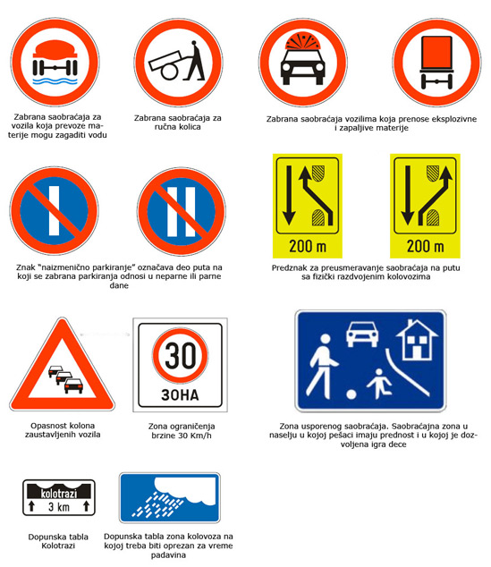
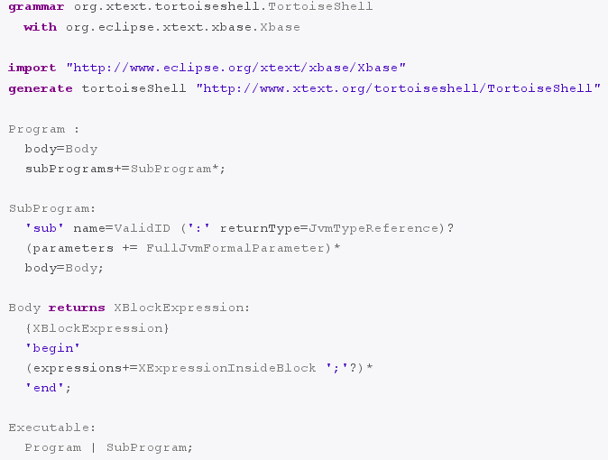

Jezici specifični za domen
Uvod
Prof. dr Igor Dejanović (igord at uns ac rs)
Kreirano 2024-09-30 Mon 14:12, pritisni ESC za mapu, m za meni, Ctrl+Shift+F za pretragu
Sadržaj
1. Problem i motivacija
1.1. Šta je jezik?
- Komunikacija misli i osećanja sistemom znakova kao što su zvuci, gestovi ili pisani simboli1.
- Sistem znakova, simbola, gestova i pravila koji se koriste u komunikaciji2.
1.2. Šta je softverski jezik?
- Jezik korišćen u komunikaciji čovek-računar ili računar-računar.
- U varijanti čovek-računar težimo da jezik bude lak za razumevanje od strane čoveka ali ipak da može da se procesira na efikasan način od strane računara.
- U kontekstu razvoj softvera dve su uloge jezika:
- preskriptivna - za opis budućih sistema
- deskriptivna - za opis postojećih sistema
1.3. Šta domen?
- Sfera delovanja, interesa ili funkcije1.
- Oblast znanja, uticaja, ili delovanja2.
- Da bi se domensko znanje moglo procesirati i da bi mogli komunicirati u određenom domenu korisno je definisati ontologiju domena koja opisuje koncepte domena i njihove međusobne veze.
- Primer domena: osiguranje, zdravstvo, finansije, saobraćaj…
- Domeni mogu sadržati poddomene. Na primer, ako je posmatrani domen problema osiguranje, poddomeni mogu biti životno osiguranje, osiguranje vozila, osiguranje nekretnina i sl.
1.4. Jezici specifični za domen - JSD (Domain-Specific Languages - DSL)
- Jezici specifični za domen (JSD, eng. Domain-Specific Languages - DSL) su jezici prilagođeni i ograničeni na određeni domen problema.
- Za razliku od jezika opšte namene (JON, eng. General Purpose Language - GPL), nude povećanje ekspresivnosti kroz upotrebu koncepata i notacija prilagođenih domenu problema i domenskim ekspertima.
- Nazivaju se još i mali jezici (eng. little languages).
- Uspešan JSD je fokusiran na uzak, dobro definisan domen i pokriva ga na odgovarajući način.
- Domen često ima svoj jezik korišćen od strane domenskih eksperata iako ne postoji njegova implementacija na računaru.
2. Primeri
2.1. SQL
SELECT player, stadium
FROM game JOIN goal ON (id=matchid)
2.2. JPA mapiranje
@Entity
@Table(name="COURSES")
public class Course {
private long courseId;
private String courseName;
public Course() {
}
public Course(String courseName) {
this.courseName = courseName;
}
@Id
@GeneratedValue
@Column(name="COURSE_ID")
public long getCourseId() {
return this.courseId;
}
}
2.3. Build jezici (Ant/Maven/Gradle)

2.4. Poslovni procesi - BPMN

2.5. OrgMode
Beleške, kreiranje sadržaja, agenda, pismeno programiranje (literate programming).
** PROJ *** TODO Pregledati prijavu greške #173 SCHEDULED: <2022-12-14 Wed> 1. [x] Neko parče koda: #+begin_src rust fn main() { // Statements here are executed when the compiled binary is called // Print text to the console println!("Hello World!"); } #+end_src #+RESULTS: : Hello World! 2. [ ] Neka druga zabeleška... *** WAIT Predati projektni izveštaj | Aktivnost | Završeno | Problemi | |----------------+----------+------------------------| | Prva aktivnost | 30% | Nema | | Druga aktinost | 25% | Problemi u snabdevanju |
2.6. Scratch
- Učenje programiranja za decu.
2.7. Mobilne aplikacije

2.8. Ali i…

2.9. ili…

2.10. pa čak i…

2.11. Kada jezik smatramo JSD-om?
- Zavisi od toga šta nam je domen.
- Jezik može biti više ili manje prilagođen nekom domenu.
- U ekstremnom slučaju i opšti jezik kao što je Java možemo smatrati JSD-om ako nam je domen “razvoj softvera”. Naravno, iako tačno u teorijskom smislu, u praktičnom gubimo sve prednosti JSD.
- Dobar JSD pokriva uzak, dobro definisan domen (domen problema). Koristi samo koncepte ciljnog domena, ograničen je na dati domen i samim tim je iskazivanje rešenja jezgrovitije i jasnije domenskim ekspertima.
- Čest je slučaj da jezik nastane kao JSD ali se vremenom proširi do te mere da ga možemo smatrati JON.
3. Prednosti
3.1. Uticaj na produktivnost
- Pojedine studije pokazuju da povećanje produktivnosti ide i do 1000%1.
- Šta je osnovni razlog za povećanje produktivnosti?
3.2. Problem mentalnog mapiranja
3.3. Rešenje upotrebom JSD
3.4. Zašto JSD?
- JSD su koncizniji od jezika opšte namene što omogućava korisnicima da jasnije iskažu svoju nameru.
- JSD sintaksa, bilo tekstualna ili grafička, može se prilagoditi i približiti domenskim ekspertima.
- Koncepti korišćeni u JSD su koncepti problemskog (poslovnog) domena što pod određenim uslovima omogućava da domenski eksperti direktno koriste JSD bez posredovanja programera.
- Upotrebom koncepata problemskog domena izbegava se ručno mapiranje na koncepte ciljne implementacione platforme. Taj posao se obavlja automatski upotrebom JSD prevodioca (kompajlera ili generatora koda).
- Iskazivanje rešenja konceptima nezavisnim od korišćene tehnologije rezultuje dužim životnim vekom aplikacije.
- Samodokumentujući jezički iskazi.
3.5. Uticaj na kvalitet softvera
- Korišćenje koncepata domena problema dovodi do smanjenja broja linija koda (u terminologiji tekstualnih notacija), što ima pozitivan uticaj na brzinu razvoja i jednostavnost odžavanja.
- Smanjenje broja linija koda ide i do 50 puta u pojedinim domenima primene. Gustina softverskih grešaka (broj softverskih grešaka na hiljadu linija koda) ne zavisi značajno od jezika koji se koristi.
- Iz toga se može zaključiti da JSD kroz smanjenje broja linija koda posredno utiču na smanjenje apsolutnog broja softverskih grešaka što povećava kvalitet softverskog proizvoda i smanjuje cenu održavanja.
- Prevođenje koda na ciljnu platformu (kompajliranje) će rezultovati konzistentnim kodom.
3.6. Uticaj na evoluciju aplikacije
- Iskazivanje rešenja konceptima nezavisnim od korišćene tehnologije rezultuje dužim životnim vekom aplikacije.
- Nije potrebno menjati jezičke iskaze (programe/modele) kada dođe do promene tehnologije. Potrebno je ažurirati generator koda.
4. Arhitekture
4.1. Arhitektura bazirana na prevodiocima
4.2. Arhitektura bazirana na interpreterima
5. Gradivni elementi
5.1. Gradivni elementi JSD
Kao i svaki softverski jezik i JSD se sastoji od:
- Apstraktne sintakse
- Jedne ili više konkretnih sintaksi
- Semantike
5.2. Apstraktna sintaksa
- Određuje pravila validnosti iskaza sa stanovišta njegove strukture.
- Definiše koncepte domena, njihove osobine i međusobne relacije
- Jezici za definisanje apstraktnih sintaksi jezika se u domenu modelovanja nazivaju meta-meta-modelima1.
5.3. Primer - apstraktna sintaksa jezika za opis konačnih automata
5.4. Apstraktno sintaksno stablo
- Svaki iskaz na datom jeziku se može na apstraktan način opisati apstraktnim sintaksnim stablom (Abstract Syntax Tree).
- Konkretna sintaksa nije važna u tom slučaju (na primer, ako posmatramo program na Javi tada ključne reči nisu deo apstraktnog stabla).
5.5. Primer apstraktnog sintaksnog stabla
5.6. Konkretna sintaksa
- Da bi mogli da prikažemo iskaz na konkretan način potrebna nam je konkretna sintaksa.
- Konkretna sintaksa definiše izgled iskaza na nekom jeziku, odnosno u širem smislu definiše i načine interakcije korisnika sa jezičkim iskazima tj. predstavlja interfejs jezik-korisnik.
- Iako nam je dovoljna jedna konkretna sintaksa za jedan jezik, možemo ih imati više.
5.7. Konkretna sintaksa
Primer istog iskaza upotrebom dve različite konkretne sintakse

5.8. Semantika
- Definiše smisao jezičkih iskaza.
- Iako postoje i druge tehnike u praksi se najčešće semantika definiše prevođenjem (kompajliranjem tj. generisanjem koda) na jezik koji već ima definisanu semantiku putem prevodioca na niže jezike ili interpretera (npr. virtualne mašine).
- Najčešće su ciljni jezici na koje se JSD prevodi jezici opšte namene.
- Primer: generisanje Java programskog koda iz JSD jezičkog iskaza.
- Jezici se prevode na sve “niže” i “niže”. Gde je kraj prevođenju? Mašinski jezik. Definisan u hardveru računara (procesoru).
6. Klasifikacija
6.1. Podela JSD prema vrsti konkretne sintakse
- Tekstualni
- Grafički
- Tabelarni
- Baziran na ekranskim formama
- …
- Hibridni - kombinacija više osnovnih
6.2. Tekstualne sintakse - prednosti i mane
- Programeri se osećaju “kod kuće”.
- Mogu se koristiti regularni tekst editori.
- Serijalizovana forma je identična sa prezentacionom. se koristiti standardni sistemi za kontrolu verzija (Git, Mercurial, Subversion …).
- Podrška u alatima: bojenje koda, dopuna koda, pretraga, navigacija…
- Mana: Nije pogodna za opis i razumevanje strukture koja nije linearne prirode (grafovi, tabele itd.).
6.3. Grafičke sintakse - prednosti
- Razumevanje strukture. Podržano operacijama zoom, pan i sl.
- Često razumljivije domenskim ekspertima (najčešće je domenski jezik grafičke prirode).
- Intuitivniji i lakši za učenje - učenje kroz isprobavanje (paleta sa alatima i konceptima, onemogućavanje kreiranje nevalidnih konstrukcija itd.).
6.4. Grafičke sintakse - mane
- Još uvek složeniji za implementaciju i održavanje.
- Za serijalizaciju se koristi format koji se razlikuje od prezentacionog.
- Otežano ili potpuno nemoguće korišćenje standardnih alata za kontrolu verzija. Potrebno je razviti poseban VCS alat.
- Zahteva namenske editore.
6.5. Podela prema vrsti domena
6.6. Podela JSD prema načinu implementacije
- Interni - Nastali su na bazi već postojećih programskih jezika (najčešće JON).
- Eksterni - Izrađeni “on nule” definisanjem sintakse i implementacijom kompajlera koji prevodi programe pisane na ovom jeziku na neki drugi jezik (najčešće JON) ili se program direktno interpretira.
6.7. Interni JSD
- Bazirani na postojećem jeziku i alatima. Najčešće tekstualni.
- Koriste svu infrastrukturu jezika domaćina (editore, debagere, kompajlere/interpretere…).
- Brzi za implementaciju i laki za održavanje. Popularni u pojedinim zajednicama (Lisp, Ruby, Groovy, Scala…).
- Dobri kao ulaznica u svet DSL/DSM/MDE pristupa.
- Najčešće na pametan način koriste mogućnosti jezika (anonimne funkcije, meta-programiranje itd.).
- Ograničenja konkretne sintakse.
- Svaka namenska biblioteka može se smatrati internim JSD (API bazirani)…
- … ali konkretna sintaksa takvog jezika nije prilagođena domenu.
6.8. Eksterni JSD
- Izrađeni “on nule” - skuplji razvoj i održavanje.
- Puna kontrola konkretne sintakse - bolje prilagođavanje domenskim ekspertima.
- Editori i svi propratni alati takođe moraju da se prave “od nule”…
- …mada danas postoje alati koji nam taj posao olakšavaju.
6.9. Neki od poznatijih eksternih JSD
- SQL: tekstualni, domen - rad sa relacionim bazama podataka
- HTML: tekstualni, domen - definisanje sadržaja na vebu
- CSS: tekstualni, domen - stilizovanje sadržaja
- make: tekstualni, domen - izgradnja aplikacije (build)
- LaTeX: tekstualni, domen: kreiranje štampanih materijala (typesetting)
- Window Builder: GUI baziran, domen - izgradnja interfejsa
- R: tekstualni, domen - statistička obrada podataka
6.10. Primer: Interni JSD za definisanje email-a (JavaMail API)
MimeMessage message = new MimeMessage(session);
message.setFrom(new InternetAddress(from));
message.addRecipient(Message.RecipientType.TO,
new InternetAddress(to));
message.setSubject("Greetings from Novi Sad");
message.setText("Enjoying my stay in Novi Sad! See you soon!");
Transport.send(message);
6.11. Primer: Hipotetički eksterni JSD za definisanje email-a
BEGIN myMail FROM me@myself.com TO myfriend@somewhere.org SUBJECT Greetings from Novi Sad Enjoying my stay in Novi Sad! See you soon! END SEND myMail
6.12. Primer
Interni JSD za definisanje grafički korisničkih interfejsa (Swing)
public DSLKurs() {
setBounds(100, 100, 450, 300);
getContentPane().setLayout(new BorderLayout());
contentPanel.setBorder(new EmptyBorder(5, 5, 5, 5));
getContentPane().add(contentPanel, BorderLayout.CENTER);
contentPanel.setLayout(new FormLayout(new ColumnSpec[ {
FormFactory.RELATED_GAP_COLSPEC,
FormFactory.DEFAULT_COLSPEC,
FormFactory.RELATED_GAP_COLSPEC,
ColumnSpec.decode("default:grow"),},
new RowSpec[] {
FormFactory.RELATED_GAP_ROWSPEC,
FormFactory.DEFAULT_ROWSPEC,
FormFactory.RELATED_GAP_ROWSPEC,
FormFactory.DEFAULT_ROWSPEC,
FormFactory.RELATED_GAP_ROWSPEC,
FormFactory.DEFAULT_ROWSPEC,}));
....
6.13. Primer
Eksterni JSD za definisanje grafički korisničkih interfejsa (WindowBuilder)

6.14. Primer
Interni JSD za definisanje gramatike jezika (Arpeggio Python)
def number(): return _(r'\d*\.\d*|\d+')
def factor(): return Optional(["+","-"]), [number,
("(", expression, ")")]
def term(): return factor, ZeroOrMore(["*","/"], factor)
def expression(): return term, ZeroOrMore(["+", "-"], term)
def calc(): return OneOrMore(expression), EOF
6.15. Primer
Eksterni JSD za definisanje gramatike jezika (Arpeggio PEG)
number = r'\d*\.\d*|\d+'
factor = ("+" / "-")?
(number / "(" expression ")")
term = factor (( "*" / "/") factor)*
expression = term (("+" / "-") term)*
calc = expression+ EOF
6.16. Konkretna sintaksa je važna!!!
Neki jezici su pogodniji za kreiranje internih JSD
6.17. Jezici pogodni za kreiranje internih JSD
- Ruby
- Groovy
- Scala
- Lisp
- …
—
6.18. Primer internog JSD (Ruby Sinatra)
get '/dogs' do
# get a listing of all the dogs
end
get '/dog/:id' do
# just get one dog, you might find him like this:
@dog = Dog.find(params[:id])
# using the params convention, you specified in your route
end
post '/dog' do
# create a new dog listing
end
put '/dog/:id' do
# HTTP PUT request method to update an existing dog
end
delete '/dog/:id' do
# HTTP DELETE request method to remove a dog who's been sold!
end
6.19. Primer internog JSD (Groovy Gradle)
repositories {
mavenCentral()
}
dependencies {
groovy fileTree(dir: new File(gradle.gradleHomeDir, 'lib'),
includes: ['**/groovyall*.jar'])
compile gradleApi()
compile 'eu.appsatori:gradlefatjarplugin:0.1.3',
{
ext.optional = true
}
testCompile 'org.spockframework:spockcore:0.6groovy1.8'
}
6.20. Eksterni JSD omogućavaju potpuno prilagođavanje domenu.
6.21. Interni JSD za muzičku notaciju
Score k = new Score(Tonality.G_major);
Bar bar = new Bar(BarType.4_4);
t.addPause(Duration.1_4);
t.addNote(NoteType.A3, Duration.1_4);
t.addNote(NoteType.C2, Duration.1_4);
k.addBar(bar);
6.22. Eksterni JSD za muzičku notaciju
U eksternoj varijanti možemo u potpunosti prilagoditi konkretnu sintaksu domenskim ekspertima.
6.23. Lilypond note script
Ali se dešava da i u eksternoj varijanti JSD nije prilagođen domenskim ekspertima.

6.24. Kritike JSD
- Skup razvoj i održavanje jezika.
- Potreba za ekspertima u domenu razvoja jezika koji su istovremeno sposobni da analiziraju domen primene.
- Jezička “kakofonija” (Language Cacophony)1 i potreba da programeri poznaju veliki broj jezika (poseban jezik za svaki tehnički i/ili poslovni domen).
6.25. Low code/No Code platforme
Danas se platforme bazirane na JSD često brendiraju kao Low Code ili No Code platforme.
7. Jezičke radionice (Language Workbenches)
7.1. Jezičke radionice (Language Workbenches)
- Integrisana okruženja za razvoj, testiranje i evoluciju jezika i alata za njihovo efikasno korišćenje (editori, interpreteri, kompajleri i sl.). Koriste se kod paradigme razvoja orijentisane ka jezicima (Language Oriented Programming - LOP)1.
- Rešavaju problem brzine razvoja i lakoće održavanja JSD.
- Primeri jezičkih radionica:
- Meta Programming System (MPS)
- Xtext
- Spoofax
7.2. Pristupi
Projekcione radionice - direktna izmena apstraktne reprezentacije kroz projekciju.

Bazirane na parserima - izmena se vrši posredno kroz tekst koji se parsira da bi se dobila apstraktna reprezentacija.

7.3. Projekcione radionice
- Prednosti:
- Moguće višestruke konkretne sintakse (tekstualne, grafičke, tabelarne…) - bolje prilagođavanje konkretnom domenu.
- Sintakse se mogu “u letu” menjati.
- Kontrola validnosti izraza u vreme izmene modela.
- Mane:
- Složenost alata.
- Format za perzistenciju nije u vezi sa konkretnim sintaksama koje korisnik koristi. Nemoguće je koristiti standardne sisteme za kontrolu verzija bazirane na tekstu.
- Moraju se razviti namenski generički editori za svaku klasu konkretnih sintaksi.
7.4. Radionice bazirane na parserima
- Prednosti:
- Jednostavnije za izradu i održavanje.
- Teorija parsiranja dobro ustanovljena. Veliki broj biblioteka za parsiranje.
- Moguće koristiti obične tekstualne editore.
- Moguće koristiti standardne sisteme za kontrolu verzija (npr. git, subversion).
- Jednostavno kopiranje i lepljenje (eng. copy/paste).
- Mane:
- Moguća samo tekstualna sintaksa -> ograničeno prilagođavanje domenu.
- Provera validnosti se odlaže do faze parsiranja.
7.5. Meta Programming System (MPS)
- JetBrains - http://www.jetbrains.com/mps/
- Projekciona jezička radionica - editori manipulišu direktno apstraktnom reprezentacijom (apstraktnim sintaksnim stablom). Čak i u slučaju tekstualnih notacija.
- Podrška za različite konkretne sintakse (notacije): tabelarne, tekstualne, bazirani na ćelijama, grafičke.
- Podrška za kontrolu verzija.
7.6. Meta Programming System - karakterističan izgled

7.7. Xtext
- Nastao kao deo projekta slobodnog softvera - openArchitectureWare.
- Iza razvoja u najvećoj meri stoji nemačka firma Itemis.
- Postao deo Eclipse projekta.
- Tekstualne sintakse. EBNF-like gramatika.
- Upotreba ECore meta-metamodela1. Meta-model se generiše iz gramatike a može da koristi i već postojeći meta-model.
- Generisanje Eclipse editora sa podrškom za bojenje sintakse, navigaciju, outline pogled itd.
- Xtext bazirani JSD se duboko integriše u Eclipse okruženje i teško je uočiti razliku sa podrškom za bilo koji drugi jezik sa Eclipse podrškom (npr. Java).
7.8. Xtext - Little tortoise jezik

7.9. Xtext - Little tortoise gramatika

7.10. Xtext - primeri
Za dokumentaciju sa primerom izgradnje 7 različitih jezika pogledati http://www.eclipse.org/Xtext/7languagesDoc.html
7.11. Spoofax
- Kao i Xtext baziran na parsiranju i tekstualnim sintaksama. Kreira punu podršku za jezik u vidu Eclipse priključaka.
- Istraživački projekat na TU Delft u Holandiji.
- Gramatika jezika se definiše meta-jezikom SDF (Syntax Definition Formalism).
- Parser koristi SGLR algoritam (Scanerless GLR) i omogućava parsiranje punog skupa kontekstno slobodnih gramatika. U slučaju neodređenosti parser vraća šumu parsiranja (parse forest) dok u slučaju determinističke gramatike vraća uvek stablo parsiranja (parse tree).
- Za tranformaciju programa i prepisivanje stabala koristi se JSD Stratego.
7.12. Spoofax - karakterističan izgled
7.13. Inženjerstvo softverskih jezika
- Software Language Engineering - SLE.
- Pravac i pogled na razvoj softverskih jezika koji pokušava da ujedini sve druge pravce koji u osnovi imaju razvoj i upotrebu softverskih jezika (MDE/MDA/DSM.., ontologije, grammarware, Language Oriented Programming…).
- Jedna od ideja je izjednačavanje modela i programa - kao jedinstven naziv predložen je mogram.*
8. Literatura
- Igor Dejanović, Jezici specifični za domen, Fakultet tehničkih nauka, Novi Sad, 2021. (dostupno u skriptarnici FTN-a)
- M. Völter, DSL Engineering: Designing, Implementing and Using Domain-Specific Languages. 2013
- S. Kelly and J.-P. Tolvanen, Domain-Specific Modeling: Enabling Full Code Generation. Wiley-IEEE Computer Society Pr, March 2008
- Federico Tomassetti, The complete guide to (external) Domain Specific Languages, February 2017.